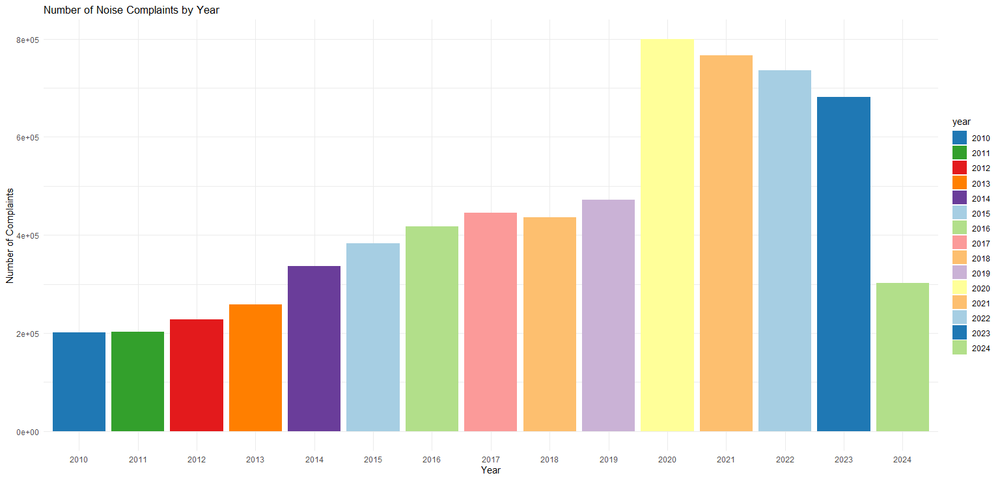
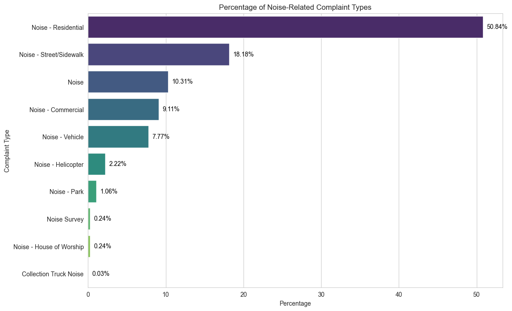
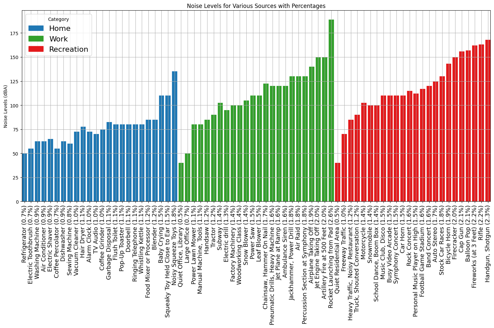
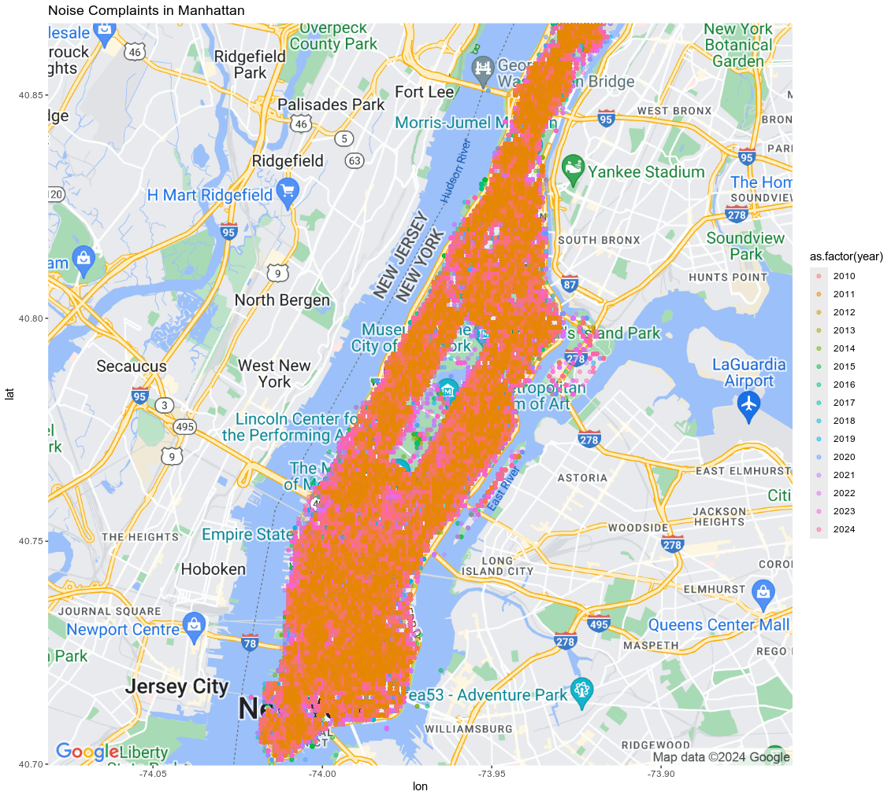
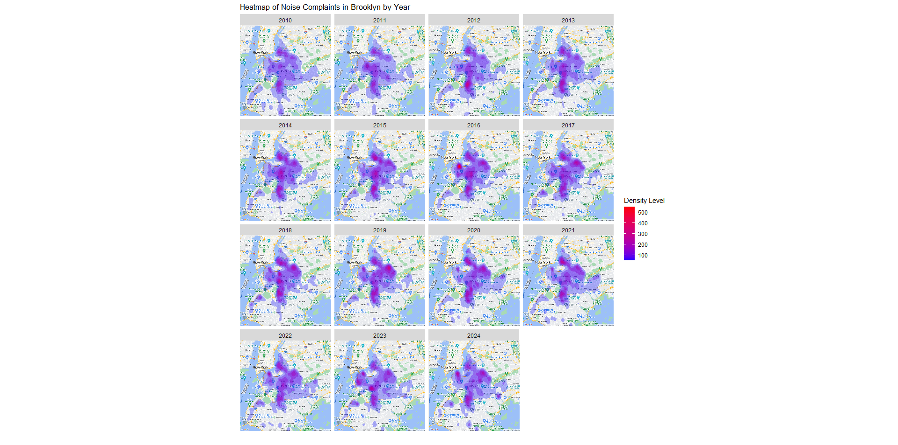
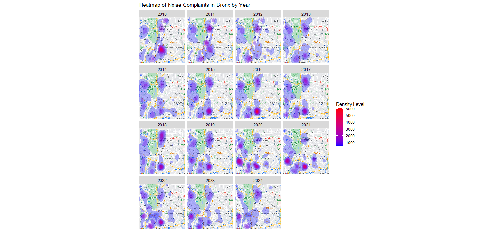
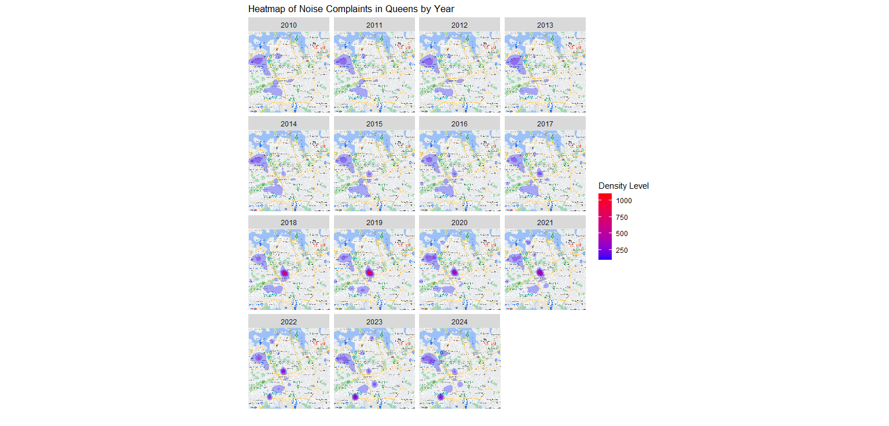
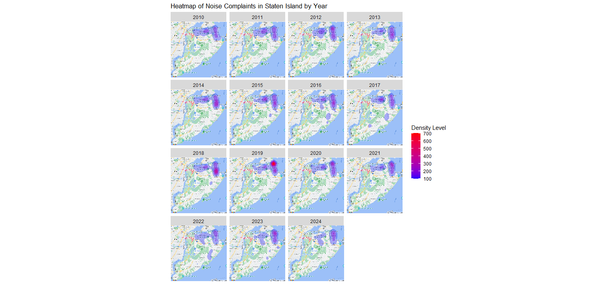

NYC 311 Noise — Figures & Code
Charts generated in R and Python from NYC 311 noise complaints. Static images below; source code available as downloads.
Key Figures

Noise complaints by year.

Share (%) of total complaints by year.


Noise levels by category (Python).
Heatmaps — 5 Boroughs

Manhattan

Brooklyn

Bronx

Queens

Staten Island